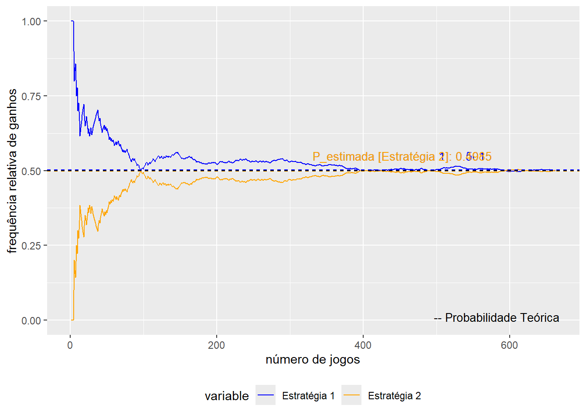
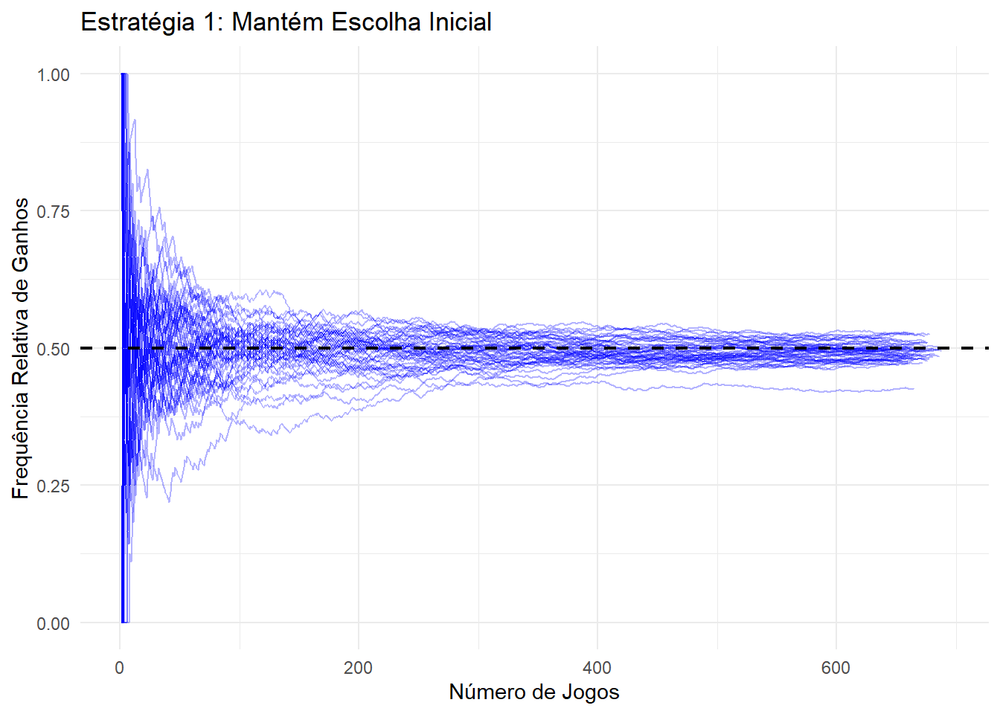
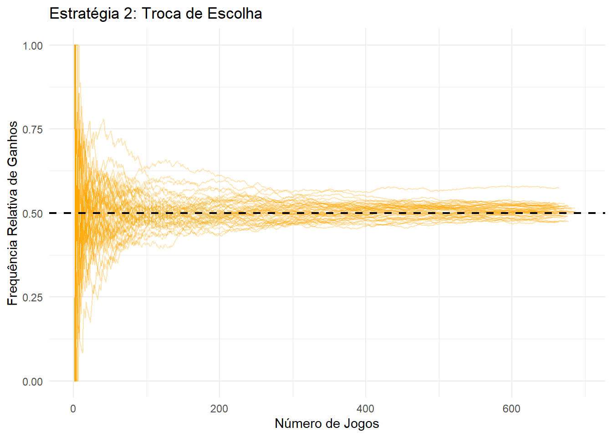

# carrega pacotes
library(tidyverse)PRÁTICA: Uma variação do Problema de Monty Hall
Considere agora a seguinte versão do problema:
Num jogo de auditório, o apresentador mostra ao participante três portas fechadas. Atrás de apenas uma das portas há um prêmio; atrás das outras, há um bode. O participante é convidado a escolher uma das portas; feito isto, o apresentador, que esqueceu a porta que esconde o prêmio, abre ao acaso uma das portas restantes. Por sorte, a porta que o apresentador abriu revela um bode. Aliviado, o apresentador pergunta, então, se o participante deseja trocar a porta inicialmente escolhida pela que permaneceu fechada. Neste caso, qual é a melhor opção?
Solução analítica: responda à pergunta utilizando argumentos probabilísticos.
Escreva um programa em R para simular esta versão do jogo e, assim, obter uma estimativa da probabilidade de vencer o jogo, considerando as seguintes estratégias: (i) o participante sempre fica com a porta original; (ii) o participante sempre troca de porta.
Resolução analítica
Considere os seguintes eventos:
\(A\) = o prêmio está atrás da porta 1
\(B\) = o prêmio está atrás da porta 2
\(C\) = o prêmio está atrás da porta 3
\(D_i\) = o apresentador abre a porta \(i\), para \(i = 1, 2, 3\)
Como sabemos que há apenas um prêmio e que ele deve necessariamente estar escondido atrás de uma das portas, os eventos A, B e C formam uma partição do espaço amostral. Assumindo que a porta que esconde o prêmio foi selecionada ao acaso, pelo princípio da indiferença, temos:
\[ P[A] = P[B] = P[C] = 1/3 \] Sem perda de generalidade, considere que o participante teve como escolha a porta \(A\) e o apresentador escolheu a porta 3 para ser revelada, mas sem ter consciência de que a porta não continha o prêmio. Por sorte, como descrito no enunciado do problema, o apresentador abriu a porta que não havia o prêmio. Queremos determinar a probabilidade posteriori \(P[A|D_3]\) e \(P[B|D3]\). Pela definição de probabilidade condicional, pode-se chegar a:
\[ P[A | D_3] = \frac{P[D_3|A]P[A]}{P[D_3]} \quad \textsf{e} \quad P[B | D_3] = \frac{P[D_3|B]P[B]}{P[D_3]} \quad \textsf{e} \quad P[C | D_3] = \frac{P[D_3|B]P[C]}{P[D_3]} \] Pelas condições do problema, a probabilidade da porta C conter o prêmio dado que o apresentado revelou a porta C é 0. Assim, pela expressão acima, conclui-se \(P[C|D_3] = 0 = P[D_3|C]\).
Como o apresentador não tem consciência de qual lugar está o prêmio, ele apenas não pode revelar a porta que foi escolhida pelo participante. Assim, \(P[D_3|A] = P[D_3|B] = \frac{1}{2}\). Por fim, basta apenas calcularmos \(P[D_3]\). Pelo teorema da probabilidade total:
\[ \begin{align*} P[D_3] &= P[AD_3 \cup BD_3 \cup CD_3] \\ &= P[AD_3] + P[BD_3]+ P [CD_3] \\ &= P[AD_3] + P[BD_3]+ P [CD_3] \\ &= P[D_3|A]P[A] + P[D_3|B]P[B]+ P [D_3|C]P[C] \\ &= \frac{1}{2}\cdot\frac{1}{3}+\frac{1}{2}\cdot\frac{1}{3}+0\cdot\frac{1}{3} \\ &= \frac{1}{3} \end{align*} \] Logo, a probabilidade do participante ganhar mantendo a porta A é dada por: \[ P[A | D_3] = \frac{P[D_3|A]P[A]}{P[D_3]} = \frac{\frac{1}{2}\cdot\frac{1}{3}}{\frac{1}{3}} = \frac{1}{2} \] A probabilidade de a porta premiada ser a outra porta que não foi revelada é :
\[ P[B | D_3] = \frac{P[D_3|B]P[B]}{P[D_3]} = \frac{\frac{1}{2}\cdot\frac{1}{3}}{\frac{1}{3}} = \frac{1}{2} \]
Resolução por simulação
Vamos agora resolver este problema através de simulação, a fim de encontrar uma aproximação (estimativa) para a probabilidade desejada.
Primeiro, vamos considerar a situação em que a estratégia do participante consiste em sempre manter a primeira porta escolhida.
mantem_porta <- function(n_portas = 3, escolha_inicial = 1){
#
# Argumento:
# n_portas = número de portas no jogo
#
# Saída:
# resultado do jogo (ganhou = 1 / perdeu = 0/
# caso o apresentador tenha revelado a porta com o prêmio = -1)
# portas disponíveis
portas <- 1:n_portas
resultado <- 0
# sorteia a porta premiada
porta_premiada <- sample(x = portas, size = 1)
porta_revelada <- revela_porta(n_portas, porta_premiada, escolha_inicial)
if(porta_revelada == porta_premiada){
resultado <- -1
return(resultado)
}
# porta escolhida pelo participante
porta_escolhida <- escolha_inicial
# verifica se o participante escolheu a porta premiada
if(porta_escolhida == porta_premiada){
resultado <- 1
}
return(resultado)
}Além disso, iremos fazer uma função que sorteia a porta que o apresentador irá abrir. Diferente da versão original do problema, o apresentador poderá escolher entre as duas portas restantes sem ter a distinção entre aquela que tem o prêmio ou não. Ou seja, ele também poderá escolher a porta que está com o prêmio. Para calcular as possibilidades de o participante acertar a porta uma vez que o apresentador deu a sorte de escolher a porta sem o prêmio, precisaremos filtrar as possibilidades em que ele revela a prova com o prêmio. Isso será feito mais a frente.
revela_porta <- function(n_portas = 3, porta_premiada, escolha_inicial){
#
# Argumentos:
# n_portas = número de portas no jogo
# porta_premiada = porta onde se encontra o prêmio
# escolha_inicial = porta escolhida pelo participante no início do jogo
#
# Saída:
# porta_revelada = no. da porta revelada pelo apresentador
# portas disponíveis
portas <- 1:n_portas
# primeiro caso: o participante escolhe a porta premiada
# o apresentador pode escolher arbitrariamente a porta a ser revelada
porta_revelada <- sample(x = portas[-escolha_inicial], size = 1)
return(porta_revelada)
}A função abaixo implementa a estratégia do participante de sempre trocar a porta inicialmente selecionada, a depender da porta que é revelada pelo apresentador, retornando se o participante ganhou o prêmio.
troca_porta <- function(n_portas = 3, escolha_inicial = 1, ...){
#
# Argumentos:
# n_portas = número de portas no jogo
# escolha_inicial = porta escolhida pelo participante no início do jogo
#
# Saída:
# resultado do jogo: (ganhou = 1 / perdeu = 0
# caso o apresentador tenha revelado a prova com o prêmio = -1)
resultado <- 0
portas <- 1:n_portas
# sorteia a porta premiada
porta_premiada <- sample(x = portas, size = 1)
# utiliza função `revela_porta` para que o apresentador
# escolha a porta a ser revelada
porta_revelada <- revela_porta(n_portas, porta_premiada, escolha_inicial)
if(porta_revelada == porta_premiada){
resultado <- -1
return(-1)
}
# participante troca a porta inicial pela que permanece fechada
porta_escolhida <- portas[-c(escolha_inicial, porta_revelada)]
# verifica se o participante escolheu a porta premiada
if(porta_escolhida == porta_premiada){
resultado <- 1
}
return(resultado)
}Vamos estimar as probabilidades de ganho para cada uma das estratégias possíveis, participando do jogo repetidas vezes. Note que cada uma das probabilidades será estimada com base em um caminho aleatório (micro-experimento). Iremos excluir nesses caminhos as vezes em que o apresentador revelou a porta com o prêmio.
set.seed(27)
Njogos <- 1000 # número de jogos simulados
estrategia_1 <- replicate(Njogos, mantem_porta())
estrategia_1 <- estrategia_1[estrategia_1 != -1] # Remover resultados -1
length(estrategia_1)[1] 662freq_rel_1 <- cumsum(estrategia_1) / 1:length(estrategia_1)
set.seed(27)
# Simulação para a estratégia 2
estrategia_2 <- replicate(Njogos, troca_porta())
estrategia_2 <- estrategia_2[estrategia_2 != -1] # Remover resultados -1
length(estrategia_2)[1] 662freq_rel_2 <- cumsum(estrategia_2) / 1:length(estrategia_2)Os valores estimados com base nas repetições válidas do jogo (em que o apresentador não revela a porta com o prêmio) para as probabilidades de ganho quando o participante utiliza as duas estratégias distintas são:
# imprime resultados:
cat(paste("Número de Jogos:", length(estrategia_1),
"\nFrequencia Relativa de Ganhos (Estratégia 1):", freq_rel_1[length(freq_rel_1)],
"\nFrequencia Relativa de Ganhos (Estratégia 2):", freq_rel_2[length(freq_rel_2)]))Número de Jogos: 662
Frequencia Relativa de Ganhos (Estratégia 1): 0.501510574018127
Frequencia Relativa de Ganhos (Estratégia 2): 0.498489425981873Agora, podemos construir algumas visualizações para observar a evolução dos valores de frequência relativa para cada uma das estratégias, conforme o jogo é repetido:
# Visualização dos resultados
# organiza as frequências relativas calculadas em uma tabela
freq_rel_df <- data.frame(
Jogos = 1:length(freq_rel_1),
F1 = freq_rel_1,
F2 = freq_rel_2
)
prob_teo <- c(1/2, 1/2)
# transforma tabela para facilitar construção do gráfico
library(reshape2)
freq_rel_melted <- melt(freq_rel_df, id.vars = "Jogos")
# constrói curvas de freq. relativa
ggplot(freq_rel_melted, aes(x = Jogos, y = value, color = variable)) +
geom_line() +
scale_y_continuous(limits = c(0, 1)) +
scale_color_manual(values = c("blue", "orange"),
labels = c("Estratégia 1", "Estratégia 2")) +
labs(x = "número de jogos", y = "frequência relativa de ganhos") +
# adiciona linhas tracejadas (valores de probabilidade estimados)
geom_hline(yintercept = c(freq_rel_1[length(freq_rel_1)], freq_rel_2[length(freq_rel_2)]),
color = c("blue", "orange"), linetype = "dashed") +
# adiciona linhas tracejadas (valores de probabilidade teóricos)
geom_hline(yintercept = prob_teo, color = "black", linetype = "dashed") +
# posiciona legenda
theme(legend.position = "bottom") +
# adiciona anotações (legenda)
annotate("text",
x = length(freq_rel_1)/2, y = prob_teo[1] + 0.05,
label = paste0("P_estimada [Estratégia 1]: ",
round(freq_rel_1[length(freq_rel_1)], 4)),
color = "blue", hjust = 0, size = 3.5) +
annotate("text",
x = length(freq_rel_1)/2, y = prob_teo[2] + 0.05,
label = paste0("P_estimada [Estratégia 2]: ",
round(freq_rel_2[length(freq_rel_2)], 4)),
color = "orange", hjust = 0, size = 3.5) +
annotate("text", x = 0.75 * length(freq_rel_1), y = 0.01,
label = "-- Probabilidade Teórica", color = "black", hjust = 0, size = 3.5)
As linhas tracejadas pretas representam as probabilidades teóricas (que assumimos desconhecidas) que desejamos estimar com base no experimento que consiste em jogar Njogos partidas do jogo. Perceba que, se não conhecêssemos o valor das probabilidades teóricas, não teríamos como avaliar a qualidade das estimativas obtidas. Sendo assim, a fim de obter informação a respeito da variabilidade associada à estimação via Método de Monte Carlo, precisamos realizar Nsim replicações do experimento. Isto significa que devemos percorrer Nsim caminhos aleatórios.
# exemplos de parâmetros
Nsim <- 50 # número de simulações (caminhos aleatórios)
Njogos <- 1000 # número de partidas a serem realizadas em cada simulação
set.seed(27)
# realiza as `Nsim` replicações do experimento
# (i.e., constrói `Nsim` caminhos aleatórios)
caminhos_estrategia_1 <- replicate(Nsim, {
resultados <- replicate(Njogos, mantem_porta(), simplify = TRUE)
resultados[resultados != -1] # Remove resultados -1
}, simplify = FALSE)
set.seed(27)
caminhos_estrategia_2 <- replicate(Nsim, {
resultados <- replicate(Njogos, troca_porta(), simplify = TRUE)
resultados[resultados != -1] # Remove resultados -1
}, simplify = FALSE)
# Determina o comprimento máximo de resultados válidos
max_length_1 <- max(sapply(caminhos_estrategia_1, length))
max_length_2 <- max(sapply(caminhos_estrategia_2, length))
# Preenche com NA para garantir que todas as simulações tenham o mesmo comprimento
freq_rel_all_1 <- sapply(caminhos_estrategia_1, function(x) {
freq_rel <- cumsum(x) / seq_along(x)
length(freq_rel) <- max_length_1 # Preenche com NA
return(freq_rel)
})
freq_rel_all_2 <- sapply(caminhos_estrategia_2, function(x) {
freq_rel <- cumsum(x) / seq_along(x)
length(freq_rel) <- max_length_2 # Preenche com NA
return(freq_rel)
})
# Converte matrizes obtidas para o formato de tabela (para usar com ggplot)
freq_rel_1_df <- as.data.frame(freq_rel_all_1)
freq_rel_1_df$Jogos <- 1:max_length_1
freq_rel_2_df <- as.data.frame(freq_rel_all_2)
freq_rel_2_df$Jogos <- 1:max_length_2
# Converte tabelas (data frame) para formato 'long'
freq_rel_1_long <- pivot_longer(freq_rel_1_df,
cols = -Jogos,
names_to = "Jogo",
values_to = "Frequencia_Relativa")
freq_rel_2_long <- pivot_longer(freq_rel_2_df,
cols = -Jogos,
names_to = "Jogo",
values_to = "Frequencia_Relativa")# Construa o gráfico de frequências relativas para diferentes caminhos aleatórios para a estratégia 1
ggplot(freq_rel_1_long, aes(x = Jogos, y = Frequencia_Relativa, group = Jogo)) +
geom_line(color = "blue", alpha = 0.3) +
geom_hline(yintercept = prob_teo[1], linetype = "dashed", color = "black", size = 0.8) +
labs(x = "Número de Jogos", y = "Frequência Relativa de Ganhos",
title = "Estratégia 1: Mantém Escolha Inicial") +
theme_minimal()
# Construa o gráfico de frequências relativas para diferentes caminhos aleatórios para a estratégia 2
ggplot(freq_rel_2_long, aes(x = Jogos, y = Frequencia_Relativa, group = Jogo)) +
geom_line(color = "orange", alpha = 0.3) +
geom_hline(yintercept = prob_teo[2], linetype = "dashed", color = "black", size = 0.8) +
labs(x = "Número de Jogos", y = "Frequência Relativa de Ganhos",
title = "Estratégia 2: Troca de Escolha") +
theme_minimal()